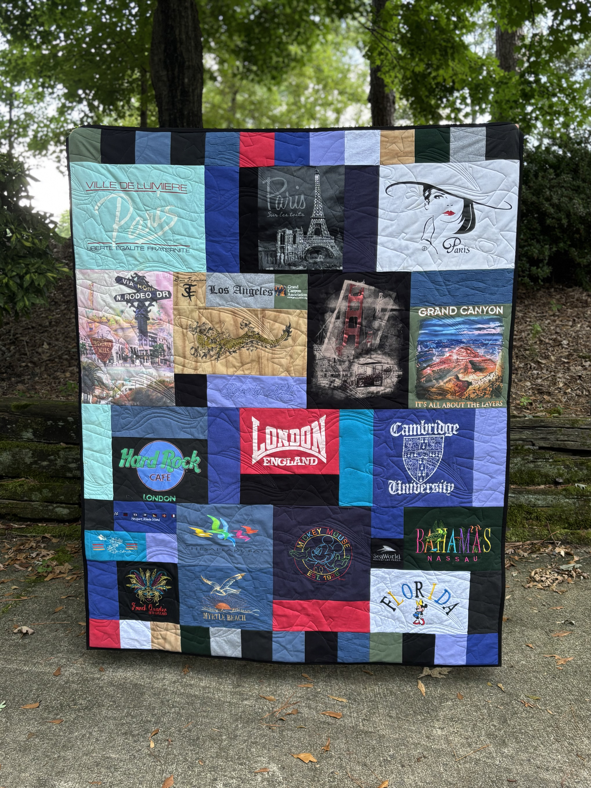

Memory Quilt
$25 per shirt
15-shirt minimum. Most families land around 25.
- Designed around your collection
- Stabilized t-shirt blocks so the quilt lasts
- Made to be washed, used, and kept
Memory Quilts
Turn a collection of favorite T-shirts and clothing into a one-of-a-kind quilt your family can use for years to come.

Sports seasons. School years. Dance recitals. Military service. Concerts. Vacations. The shirts you wore through the years you don’t want to lose.
A memory quilt is the full-size version of that story—something that lives on a bed or the back of a couch instead of a tote in the closet.
Most quilts use approximately 25 shirts. Fifteen is the minimum.
$25 per shirt
15-shirt minimum. Most families land around 25.
Clean shirts and clothing you want in the quilt. I’ll help you sort what works, what should stay whole for a pillow or bear, and how many pieces you still need.
You don’t need to know anything about sewing or quilting. That’s my part.
Recent quilts
Recitals, showcases, and studio shirts stitched into one quilt you can put on a bed instead of leaving in a closet.

Clemson, clubs, and the shirts from a whole season of being all in—kept as something the family can actually use.

Paris, London, the Grand Canyon, the beach—vacation shirts laid out as a map of where those years went.